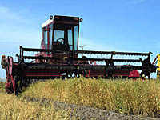
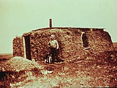
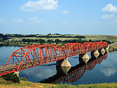
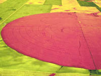

|
|
|
| Soil is a valuable natural resource which gives us food, clothing and shelter. We dump on it,
pollute it and abuse it; yet without it, we could not survive.
|
|||
 Soils and Agriculture Probably the most important use of soil is to grow the world's food and fibre. Soil is a limited resource in that there is only so much arable land to supply our needs. How much land do we need? That depends on your lifestyle! If we were just to have enough food to keep alive we would need about 180 kg of grain per person per year. About 0.2 acres is needed to grow that amount grain. In North America at least four times that amount is need to support a more affluent lifestyle. What about other uses for the land? We need to grow crops for fibre (e.g.cotton) or fuel by converting the grain ethanol. Fuel substitutes will become more important as our oil resources become used up. It takes about 13 acres of land to supply ethanol for a vehicle that has a fuel efficiency of 11.5 litres per 100km (20 miles per gallon) 20,000 km per year. Another fact to consider is how much meat we eat. If we feed the grain to animals to produce meat rather than eating it ourselves a large portion of the food energy is used by the animal to stay alive and move around. For example there is a 10:1 conversion factor from grain to beef for feedlot cattle and 50:1 for range cattle. Chicken is produced more economically with a conversion factor of about 2:1. | |||
 Soils and Shelter Another use of soil is provide shelter. Many early settlers in Saskatchewan built sod houses that survived for many years. Other examples include adobe houses in Latin America and modern energy-efficiency earthen houses of today. | |||
 Soils and Construction Soil is of great interest to engineers as a support medium for roadways, bridges and buildings. The sciences of "soil physics and engineering" address this topic.
| |||
 Soils and Water
Soil acts as a water reservoir. Without soil, plants would quickly run out of water between rainfalls. Irrigation is essential in many parts of the world for economic crop production. Seen in this infrared shot from the air is a pivot irrigation system near Outlook, Saskatchewan
| |||

Soils and Pollution Soil acts as a physical, chemical and biological filter which removes harmful organisms and pollutants from our ground water and recycles wastes. Imagine the problems of a leaking oil well if the soil did not act as a sponge to soak up the excess oil. However, once a soil has been overly contaminated with harmful pollutants it can be very expensive to fix the problem. Often the entire topsoil has to be removed and taken away to a toxic dump site or incinerated. Many of our modern golf courses began life as mine spoils that have simply been contoured and a layer of topsoil added.
|